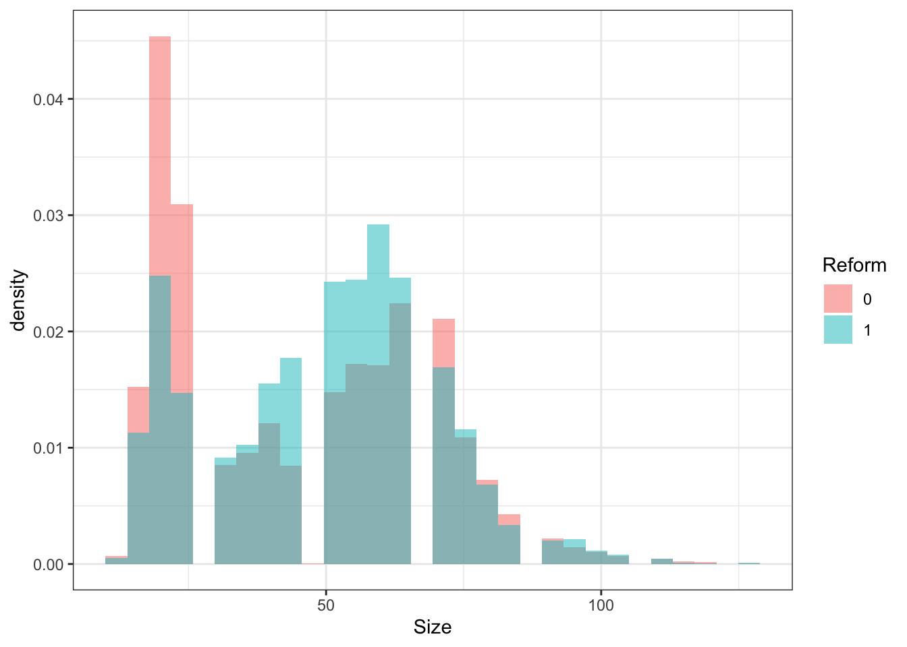
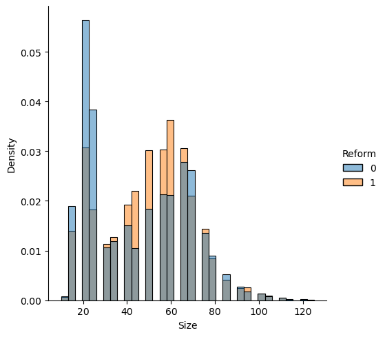
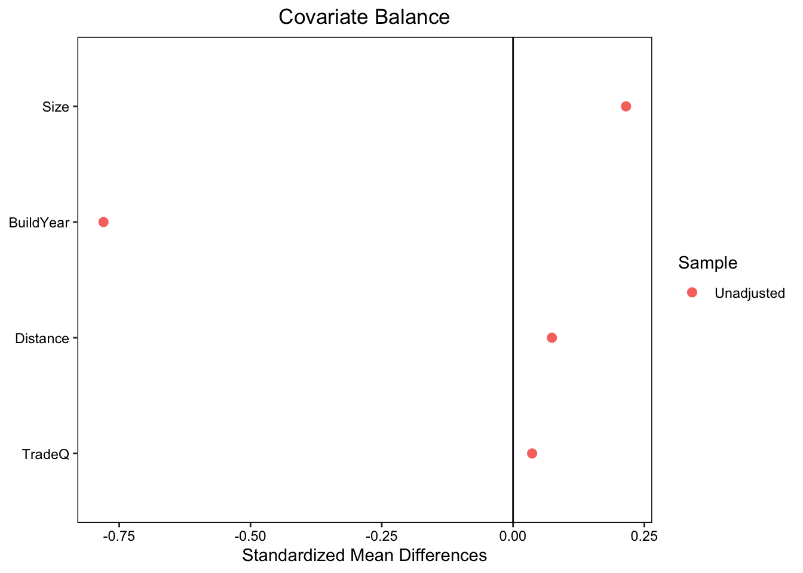

library(tidyverse)
library(gtsummary) # 記述統計
library(cobalt) # バランス確認
Data_R <- read_csv("ExampleData/Example.csv")6 付録: 記述統計
関心のあるグループ \((D)\) ごとに記述統計をまとめる
Section 6.2 記述統計表を作成
Section 6.3 ヒストグラムを用いた比較
Section 6.4 変数の分布がバランスしているかどうか、図示する
6.1 設定
6.2 記述統計表
- \(D=Reform\) ごとに以下を表示
連続変数については、 “中央値(下位25%, 上位25%)”
カテゴリー変数について、 “サンプルサイズ(割合)”
Data_R |>
tbl_summary(by = "Reform")| Characteristic | 0, N = 11,0121 | 1, N = 3,7811 |
|---|---|---|
| TradeQ | ||
| 1 | 2,864 (26%) | 963 (25%) |
| 2 | 2,940 (27%) | 967 (26%) |
| 3 | 2,682 (24%) | 914 (24%) |
| 4 | 2,526 (23%) | 937 (25%) |
| Size | 45 (25, 65) | 50 (35, 65) |
| BuildYear | 2,006 (1,998, 2,012) | 1,995 (1,984, 2,003) |
| Distance | 6.0 (4.0, 9.0) | 7.0 (4.0, 10.0) |
| Price | 31 (22, 50) | 34 (24, 48) |
| 1 n (%); Median (IQR) | ||
Data_Python.groupby('Reform').describe().TReform 0 1
TradeQ count 11012.000000 3781.000000
mean 2.442245 2.482677
std 1.107117 1.120293
min 1.000000 1.000000
25% 1.000000 1.000000
50% 2.000000 2.000000
75% 3.000000 3.000000
max 4.000000 4.000000
Size count 11012.000000 3781.000000
mean 45.175490 49.809574
std 22.727207 20.268129
min 10.000000 10.000000
25% 25.000000 35.000000
50% 45.000000 50.000000
75% 65.000000 65.000000
max 125.000000 125.000000
BuildYear count 11012.000000 3781.000000
mean 2003.263187 1993.545579
std 12.008525 12.893772
min 1963.000000 1964.000000
25% 1998.000000 1984.000000
50% 2006.000000 1995.000000
75% 2012.000000 2003.000000
max 2022.000000 2021.000000
Distance count 11012.000000 3781.000000
mean 6.973628 7.275513
std 4.049774 4.109578
min 0.000000 0.000000
25% 4.000000 4.000000
50% 6.000000 7.000000
75% 9.000000 10.000000
max 22.000000 21.000000
Price count 11012.000000 3781.000000
mean 39.529176 40.086363
std 32.085602 27.362758
min 0.500000 0.540000
25% 22.000000 24.000000
50% 31.000000 34.000000
75% 50.000000 48.000000
max 1600.000000 300.0000006.3 ヒストグラム
- \(D=Reform\) ごとに以下を表示
Data_R |>
mutate(Reform = factor(Reform)) |>
ggplot(
aes(
x = Size,
fill = Reform,
group = Reform
)
) +
geom_histogram(
aes(y=..density..),
alpha=0.5,
position='identity'
) +
theme_bw()
sns.displot(
Data_Python,
x="Size",
hue="Reform",
stat="density",
common_norm=False)
6.4 バランス確認
異なるDグループ間で、Xの分布の違いを確認
Xの平均差/Xの標準偏差を報告 (Imbens (2015) などで推奨)
bal.tab(Reform ~ Size + BuildYear + Distance + TradeQ,
Data_R,
binary = "std", continuous = "std") |>
plot()
- 築年が古い、広い、駅からの距離が長い物件が、改装されがち
- Under construction